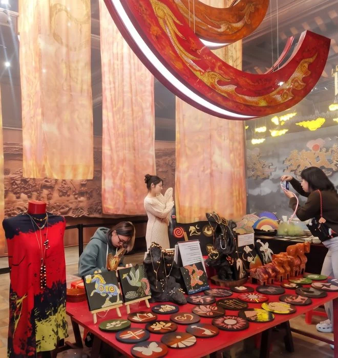
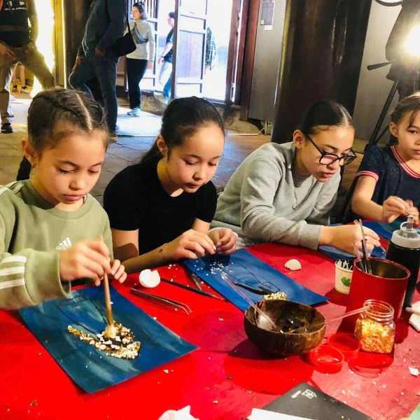
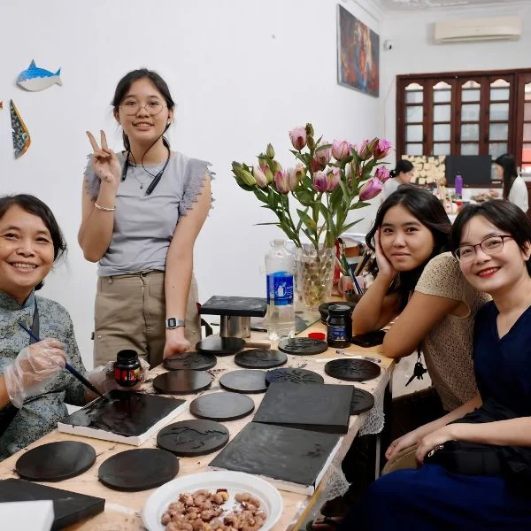

01

TẠI GIAN HÀNG · KHU B
TỰ DODạo xem những chất liệu Việt
Khám phá phụ kiện sừng vẽ sơn mài, thú gỗ, đĩa và tranh sơn mài, áo phông và khăn lụa Batik.
KHÁM PHÁ
MỘT CUỘC HẸN GIỮA LÒNG HÀ NỘI · 2026
Giữa dòng chảy văn hóa và di sản, có một nơi để bạn dạo xem, tự tay sáng tạo và tìm thấy một chút Hà Nội cho riêng mình.
Khám phá hành trình của bạn
01 / HÀNH TRÌNH SOULINA
SOULINA là điểm gặp của nghệ thuật Việt, sản phẩm thủ công và những người yêu sáng tạo. Bạn có thể bắt đầu bằng một vòng dạo xem, rồi chọn trải nghiệm mình thích.

Khám phá phụ kiện sừng vẽ sơn mài, thú gỗ, đĩa và tranh sơn mài, áo phông và khăn lụa Batik.
Vẽ màu trang trí tò he đất hoặc tự in bưu thiếp. Một khoảng dừng ngắn dành cho đôi tay và trí tưởng tượng.

Trải nghiệm workshop vẽ sơn mài tại SOULINA. Lịch, phí và cách đăng ký đang được cập nhật.
Lịch tham gia, số gian và thông tin đăng ký sẽ được bổ sung sau khi xác nhận.